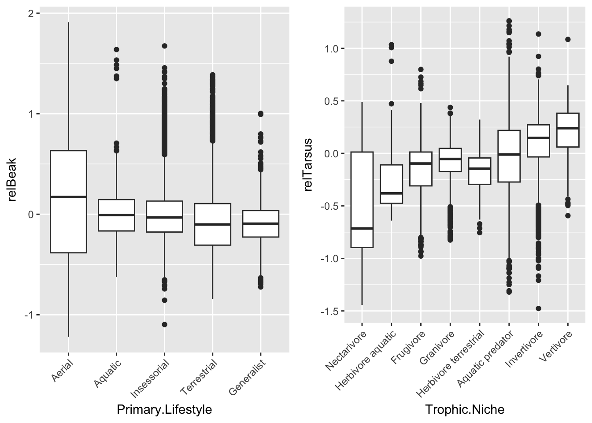

── Attaching core tidyverse packages ──────────────────────── tidyverse 2.0.0 ──
✔ dplyr 1.1.4 ✔ readr 2.1.5
✔ forcats 1.0.0 ✔ stringr 1.5.1
✔ ggplot2 3.5.1 ✔ tibble 3.2.1
✔ lubridate 1.9.4 ✔ tidyr 1.3.1
✔ purrr 1.0.2
── Conflicts ────────────────────────────────────────── tidyverse_conflicts() ──
✖ dplyr::filter() masks stats::filter()
✖ dplyr::lag() masks stats::lag()
ℹ Use the conflicted package (<http://conflicted.r-lib.org/>) to force all conflicts to become errors
d <-read_csv("https://raw.githubusercontent.com/difiore/ada-datasets/main/AVONETdataset1.csv", col_names =TRUE)
Rows: 11009 Columns: 37
── Column specification ────────────────────────────────────────────────────────
Delimiter: ","
chr (13): Species1, Family1, Order1, Avibase.ID1, Mass.Source, Mass.Refs.Oth...
dbl (24): Sequence, Total.individuals, Female, Male, Unknown, Complete.measu...
ℹ Use `spec()` to retrieve the full column specification for this data.
ℹ Specify the column types or set `show_col_types = FALSE` to quiet this message.
d <- d |>select(Species1, Family1, Order1, Beak.Length_Culmen, Beak.Width, Beak.Depth, Tarsus.Length, Wing.Length, Tail.Length, Mass, Habitat, Migration, Trophic.Level, Trophic.Niche, Min.Latitude, Centroid.Latitude, Primary.Lifestyle, Range.Size)# exploratory data analysislibrary(skimr)glimpse(d)
# boxplots of log(Mass) in relation to Trophic.Levelggplot(data = d |>drop_na(Trophic.Level), aes(x = Trophic.Level, y =log(Mass))) +geom_boxplot() +geom_jitter()
#boxplots of log(Mass) in relation to Migrationggplot(data = d |>drop_na(Migration), aes(x = Migration, y =log(Mass))) +geom_boxplot() +geom_jitter()
Warning: Continuous x aesthetic
ℹ did you forget `aes(group = ...)`?
#convert the variable Migrationd <- d |>mutate(Migration =as.factor(Migration))
Step 2: Linear models
m1 <-lm(log(Mass) ~ Trophic.Level, data = d)m2 <-lm(log(Mass) ~as.factor(Migration), data = d)summary(m1)
Call:
lm(formula = log(Mass) ~ Trophic.Level, data = d)
Residuals:
Min 1Q Median 3Q Max
-3.4229 -1.1551 -0.3028 0.8982 7.5526
Coefficients:
Estimate Std. Error t value Pr(>|t|)
(Intercept) 3.80834 0.01967 193.632 < 2e-16 ***
Trophic.LevelHerbivore 0.25639 0.03406 7.528 5.54e-14 ***
Trophic.LevelOmnivore 0.01422 0.04116 0.345 0.73
Trophic.LevelScavenger 4.63189 0.34447 13.446 < 2e-16 ***
---
Signif. codes: 0 '***' 0.001 '**' 0.01 '*' 0.05 '.' 0.1 ' ' 1
Residual standard error: 1.538 on 11000 degrees of freedom
(5 observations deleted due to missingness)
Multiple R-squared: 0.02094, Adjusted R-squared: 0.02067
F-statistic: 78.42 on 3 and 11000 DF, p-value: < 2.2e-16
summary(m2)
Call:
lm(formula = log(Mass) ~ as.factor(Migration), data = d)
Residuals:
Min 1Q Median 3Q Max
-3.8924 -1.1769 -0.3088 0.9152 7.8427
Coefficients:
Estimate Std. Error t value Pr(>|t|)
(Intercept) 3.77457 0.01636 230.710 < 2e-16 ***
as.factor(Migration)2 0.75971 0.04731 16.059 < 2e-16 ***
as.factor(Migration)3 0.37647 0.05155 7.303 3.02e-13 ***
---
Signif. codes: 0 '***' 0.001 '**' 0.01 '*' 0.05 '.' 0.1 ' ' 1
Residual standard error: 1.535 on 10983 degrees of freedom
(23 observations deleted due to missingness)
Multiple R-squared: 0.02563, Adjusted R-squared: 0.02546
F-statistic: 144.5 on 2 and 10983 DF, p-value: < 2.2e-16
Step 3: Post-hoc Tukey Honest Significant Differences test
d <- d |>mutate(Trophic.Level =relevel(as.factor(Trophic.Level), ref ="Herbivore"))m1 <-lm(log(Mass) ~ Trophic.Level, data = d)summary(m1)
Call:
lm(formula = log(Mass) ~ Trophic.Level, data = d)
Residuals:
Min 1Q Median 3Q Max
-3.4229 -1.1551 -0.3028 0.8982 7.5526
Coefficients:
Estimate Std. Error t value Pr(>|t|)
(Intercept) 4.06473 0.02780 146.196 < 2e-16 ***
Trophic.LevelCarnivore -0.25639 0.03406 -7.528 5.54e-14 ***
Trophic.LevelOmnivore -0.24217 0.04561 -5.309 1.12e-07 ***
Trophic.LevelScavenger 4.37550 0.34503 12.682 < 2e-16 ***
---
Signif. codes: 0 '***' 0.001 '**' 0.01 '*' 0.05 '.' 0.1 ' ' 1
Residual standard error: 1.538 on 11000 degrees of freedom
(5 observations deleted due to missingness)
Multiple R-squared: 0.02094, Adjusted R-squared: 0.02067
F-statistic: 78.42 on 3 and 11000 DF, p-value: < 2.2e-16
ggplot(data = d |>drop_na(Trophic.Level), aes(x = Trophic.Level, y =log(Mass))) +geom_boxplot()
Pairwise comparisons using t tests with pooled SD
data: log(d$Mass) and d$Trophic.Level
Herbivore Carnivore Omnivore
Carnivore 3.3e-13 - -
Omnivore 6.7e-07 1 -
Scavenger < 2e-16 < 2e-16 < 2e-16
P value adjustment method: bonferroni
summary(m1)
Call:
lm(formula = log(Mass) ~ Trophic.Level, data = d)
Residuals:
Min 1Q Median 3Q Max
-3.4229 -1.1551 -0.3028 0.8982 7.5526
Coefficients:
Estimate Std. Error t value Pr(>|t|)
(Intercept) 4.06473 0.02780 146.196 < 2e-16 ***
Trophic.LevelCarnivore -0.25639 0.03406 -7.528 5.54e-14 ***
Trophic.LevelOmnivore -0.24217 0.04561 -5.309 1.12e-07 ***
Trophic.LevelScavenger 4.37550 0.34503 12.682 < 2e-16 ***
---
Signif. codes: 0 '***' 0.001 '**' 0.01 '*' 0.05 '.' 0.1 ' ' 1
Residual standard error: 1.538 on 11000 degrees of freedom
(5 observations deleted due to missingness)
Multiple R-squared: 0.02094, Adjusted R-squared: 0.02067
F-statistic: 78.42 on 3 and 11000 DF, p-value: < 2.2e-16
m1 <-aov(log(Mass) ~ Trophic.Level, data = d)original.F <-aov(log(Mass) ~ Trophic.Level, data = d) |> broom::tidy() |>filter(term =="Trophic.Level") (posthoc <-TukeyHSD(m1, which ="Trophic.Level",conf.level =0.95))
Warning in plot_theme(plot): The `axis.test.x` theme element is not defined in
the element hierarchy.
cowplot::plot_grid(p1, p2, nrow =1)
Warning in plot_theme(plot): The `axis.test.x` theme element is not defined in the element hierarchy.
The `axis.test.x` theme element is not defined in the element hierarchy.

Step 3:
migration <- d |>drop_na(Migration)library(mosaic)
Registered S3 method overwritten by 'mosaic':
method from
fortify.SpatialPolygonsDataFrame ggplot2
The 'mosaic' package masks several functions from core packages in order to add
additional features. The original behavior of these functions should not be affected by this.
Attaching package: 'mosaic'
The following object is masked from 'package:Matrix':
mean
The following objects are masked from 'package:infer':
prop_test, t_test
The following object is masked from 'package:skimr':
n_missing
The following objects are masked from 'package:dplyr':
count, do, tally
The following object is masked from 'package:purrr':
cross
The following object is masked from 'package:ggplot2':
stat
The following objects are masked from 'package:stats':
binom.test, cor, cor.test, cov, fivenum, IQR, median, prop.test,
quantile, sd, t.test, var
The following objects are masked from 'package:base':
max, mean, min, prod, range, sample, sum